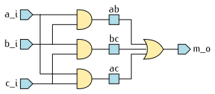
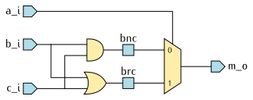
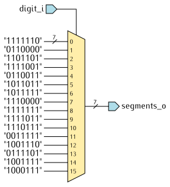

Définition
Dans un langage de programmation, une instruction d’affectation permet de
donner une valeur à une variable.
En VHDL, dans une architecture, une instruction d’affectation
concurrente s’apparente plutôt à une équation qui définit comment la valeur
d’un signal est calculée au cours du fonctionnement du circuit.
Une instruction d’affectation concurrente s’exécute en permanence
et en parallèle avec les autres instructions de la même architecture.
Fonction majorité
La fonction majorité retourne la valeur majoritaire entre trois
entrées a, b et c.
Si au moins deux entrées valent '0', le résultat est '0'.
Si au moins deux entrées valent '1', le résultat est '1'.
Sa table de vérité est rappelée ci-dessous :
| a |
b |
c |
→ |
m |
| 0 |
0 |
0 |
→ |
0 |
| 0 |
0 |
1 |
→ |
0 |
| 0 |
1 |
0 |
→ |
0 |
| 0 |
1 |
1 |
→ |
1 |
| 1 |
0 |
0 |
→ |
0 |
| 1 |
0 |
1 |
→ |
1 |
| 1 |
1 |
0 |
→ |
1 |
| 1 |
1 |
1 |
→ |
1 |
Dans ce premier exemple, nous l’avons décrite au moyen de trois
instructions d’affectation concurrentes simples :
entity Majority is
port(
a_i, b_i, c_i : in std_logic;
m_o : out std_logic
);
end Majority;
architecture Equations of Majority is
signal ab, bc, ac : std_logic;
begin
m_o <= ab or bc or ac;
ab <= a_i and b_i;
bc <= b_i and c_i;
ac <= a_i and c_i;
end Equations;
Cette architecture peut être représentée par le schéma suivant :

Les instructions d’affectation concurrentes de l’architecture Equations
décrivent fidèlement le fonctionnement des circuits logiques du schéma.
Par exemple, à chaque fois que a_i change de valeur, les signaux ab
et ac sont automatiquement recalculés, ce qui provoque à son tour une
mise à jour de la sortie m_o.
Fonction majorité avec un multiplexeur à deux voies
Dans cette deuxième version, nous observons que la table de vérité
peut être décomposée en deux parties.
Lorsque a = '0', nous pouvons écrire :
| b |
c |
→ |
m |
| 0 |
0 |
→ |
0 |
| 0 |
1 |
→ |
0 |
| 1 |
0 |
→ |
0 |
| 1 |
1 |
→ |
1 |
Lorsque a = '1', nous pouvons écrire :
| b |
c |
→ |
m |
| 0 |
0 |
→ |
0 |
| 0 |
1 |
→ |
1 |
| 1 |
0 |
→ |
1 |
| 1 |
1 |
→ |
1 |
Le choix entre deux expressions possibles en fonction d’une condition peut être
exprimé à l’aide d’une instruction d’affectation conditionnelle
(when...else) :
architecture Condition of Majority is
signal bnc, brc : std_logic;
begin
m_o <= bnc when a_i = '0' else brc;
bnc <= b_i and c_i;
brc <= b_i or c_i;
end Condition;
Matériellement, cela correspond à l’utilisation d’un multiplexeur à deux voies :

Calcul de PGCD
Le calcul du PGCD présenté dans un chapitre
précédent illustre l’utilisation d’instructions d’affectations conditionnelles
pour créer des cascades de multiplexeurs.
a_next <= a_i when load_i = '1' else
a_reg - b_reg when a_reg > b_reg else
a_reg;
b_next <= b_i when load_i = '1' else
b_reg - a_reg when b_reg > a_reg else
b_reg;
done_o <= '1' when a_reg = b_reg else '0';
Pour les signaux a_next et b_next, chaque clause when...else est réalisée
par un multiplexeur à deux voies.
Sur le schéma ci-dessous, elles se lisent de la droite vers la gauche.
Dans les cas triviaux, comme ici pour le signal done_o, un multiplexeur ne serait
d’aucune utilité. On le relie directement à la sortie du comparateur.

Décodeur 7 segments
Dans l’architecture TruthTable de l’entité SegmentDecoder, nous
avons utilisé une instruction d’affectation avec sélection :
entity SegmentDecoder is
port(
digit_i : in integer range 0 to 15;
segments_o : out std_logic_vector(0 to 6)
);
end SegmentDecoder;
architecture TruthTable of SegmentDecoder is
begin
with digit_i select
segments_o <= "1111110" when 0,
"0110000" when 1,
"1101101" when 2,
"1111001" when 3,
"0110011" when 4,
"1011011" when 5,
"1011111" when 6,
"1110000" when 7,
"1111111" when 8,
"1111011" when 9,
"1110111" when 10,
"0011111" when 11,
"1001110" when 12,
"0111101" when 13,
"1001111" when 14,
"1000111" when 15;
end TruthTable;
Sans chercher à optimiser le circuit, cette instruction peut être représentée par
un multiplexeur comportant autant de voies qu’il y a de cas possibles :

{kind=link}
{kind=link}
{kind=link}